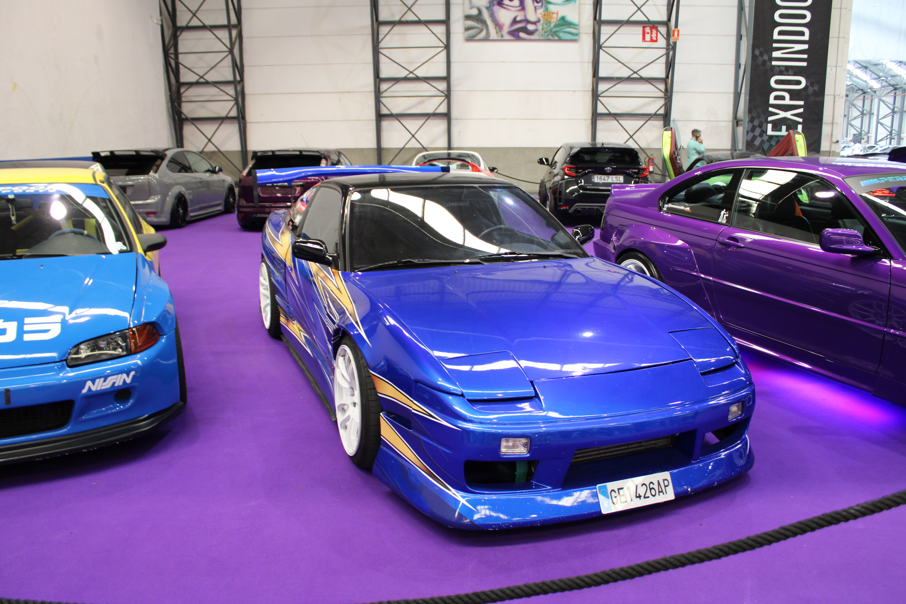
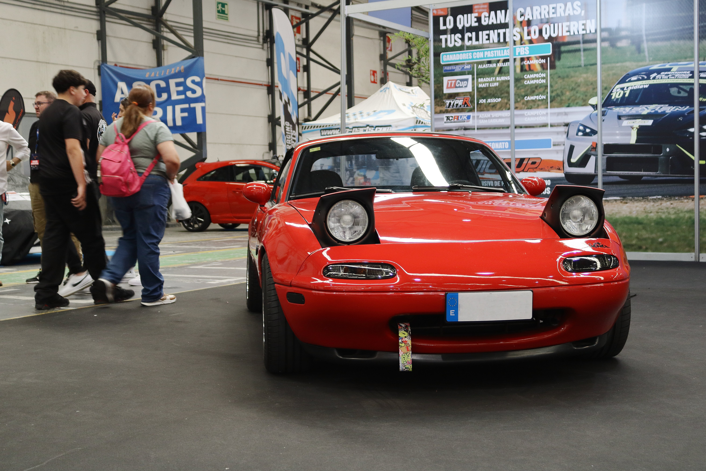
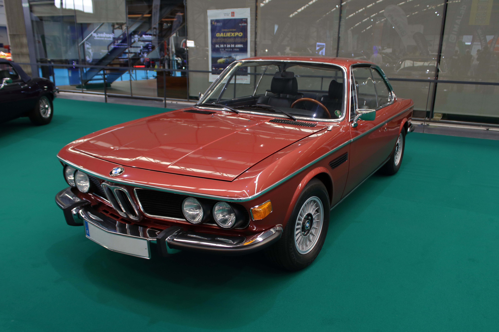

Todos los iconos deben tener el mismo tamaño y estilo, y una alternativa de texto para las personas que no puedan verlos (apartado 8.2 del tema).
La rejilla roja marca los "puntos de fuerza" de cada imagen (ver apartado 9 del tema). Sustituye las dos imágenes de ejemplo por otras tuyas y comprueba si el sujeto principal cae cerca de alguno de esos puntos.

Para cada imagen, indica qué ángulo crees que se ha usado (normal, contrapicado, picado, nadir o cenital) y en qué tipo de página web lo usarías.

En cualquier tipo de web en la que tengamos que presentar productos
En una web de arquitectura para enfatizar la estructura

En una web de comida para mostrar platos apetitosos
Es mejor usar una fuente de iconos en vez de imágenes sueltas porque los iconos vectoriales son escalables y se adaptan a diferentes tamaños sin perder calidad. Además, permiten un estilo uniforme y consistente en toda la web, lo que mejora a experiencia del usuario.